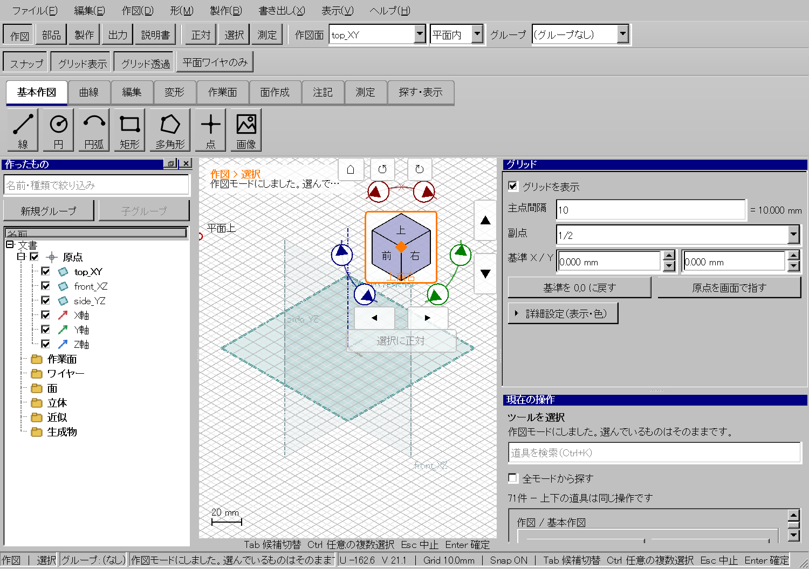
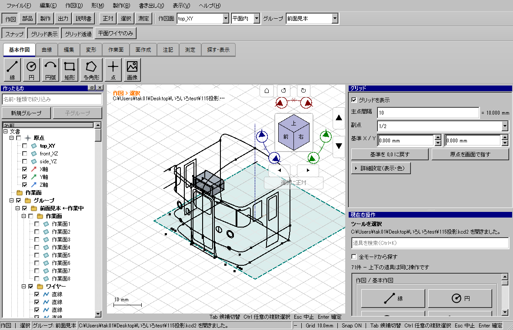

視点操作の遅延削減・ギズモの改善
2026-10-23 / 開発ブランチ codex/v2-wp01-build-scaffold / ソース38dd139eb
Windows全体ゲート・配布版検証・通常起動が成功。
起動EXE。修正コミット38dd139ebはoriginへpush済み。
原因と変更
多数選択時、面・線・制御点の描画で、要素ごとに選択一覧をコピー・補完していた。選択変更時に表示専用の索引を一度作り、描画時に参照する。部分辺選択、Faceと互換IDの共存、選択順・編集上の意味は維持する。輪郭領域の選択seedも選択変更時にまとめる。制御点は同じ曲線・同じ順序・同じ位置のまま描く。幾何コア・保存形式・精度は変えない。
ギズモは208×240論理pxに集約し、キューブを60→88pxに拡大。リングの座、ボタン、キューブを重ねない。面・辺・角のホバー箇所を直接着色し、見えているギズモを背後の押し出しハンドルより先に選ぶ。同じ画面方向へのドラッグは左右・上下どちらのボタンでも同じ回転方向。クリック15度、Shiftクリック5度。Homeと選択に正対は、外へドラッグ／外で離した場合は実行しない。

同じ条件の計測
Windows、2560×1440、倍率100%、NVIDIA GeForce GTX1060 6GB、Qtマウスイベントによる回転／パン、再描画とGPU完了を含む。各条件4回ウォームアップ後24フレーム。最大128要素を選択。原本SHA不変。中央値はms/フレーム。修正前は7403875a9と同じ製品コードに選択ベンチ計測だけを追加。最終は38dd139eb。各条件一組であり長時間の保証ではない。
| モデル | 条件 | 前 中央値 | 後 中央値 | 後 p95 | 後 最大 |
|---|
| owner | off / orbit | 30.12 | 16.70 | 17.15 | 17.31 |
| owner | off / pan | 30.50 | 16.65 | 20.26 | 30.71 |
| owner | subdivision / orbit | 30.60 | 16.65 | 18.74 | 19.90 |
| owner | subdivision / pan | 30.95 | 17.35 | 18.30 | 18.62 |
| owner | near-edge / orbit | 29.92 | 16.65 | 19.54 | 19.94 |
| owner | near-edge / pan | 30.16 | 16.70 | 19.43 | 32.37 |
| heavy | off / orbit | 648.39 | 41.67 | 43.93 | 45.17 |
| heavy | off / pan | 654.08 | 42.31 | 45.20 | 46.33 |
| heavy | subdivision / orbit | 637.57 | 48.20 | 61.73 | 81.28 |
| heavy | subdivision / pan | 637.45 | 42.42 | 158.96 | 195.00 |
| heavy | near-edge / orbit | 641.55 | 42.49 | 44.52 | 44.62 |
| heavy | near-edge / pan | 637.92 | 41.46 | 43.77 | 44.05 |
空モデルは概ね16.6～17msだが副グリッドのパンでは33.31msの条件もあった。大規模モデルの選択なしは約17～18ms、選択ありは約42～48ms。全機能・全条件の60fpsは未達。副グリッド・多数選択では158.96msのp95もあり、細かい引っ掛かりが完全になくなったという結果ではない。生データを残し、良い条件だけで削減率を断定しない。
検証
重点69件、倍率150%・offscreen・Windowsソフトウェア描画は各19件が成功。Qtイベントで入力した実画面と直接API検査を組み合わせた自動試験であり、OSのマウスを手で操作したという意味ではない。26のキューブ領域、14の操作部品、6つのリング座、320×240の最小配置、再入選択通知、索引と既存コア判定の一致を検査。途中の重なり検出は失敗記録を保持し、配置修正後に同じ条件で成功した。
全体ゲート camera-navigator-verified-20261023：CTest195件、skip0。開発版UI566件・配布版UI566件、旧アプリ自己試験が成功。2026-10-23T12:10:46.732267+00:00 ～ 2026-10-23T12:38:49.560038+00:00（約28分）。検証済み配布物から実モデルをWindowsで通常起動し、表示・露出・画面内配置・イベントループ・描画を確認。原本SHA不変、アプリは開いたまま。

構成
新規のV2RenderSelectionとV2NavigatorHighlightはUI専用の独立ファイル。V2MainWindow.hは変更していない。既存の編集用選択一覧を書き換えず、表示用索引をQObjectの子として所有する。削除したソースファイルは0。元のモデル・旧配布・ユーザーの起動中アプリは保全。
計測CSV / 全条件JSON / 重点結果